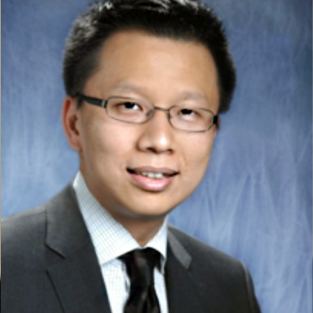

<div class="container">
    <div class="row">
        <div id="speaker-detail" class="col-lg-6 col-lg-offset-3">
            <div class="row">
                <button title="Close (Esc)" type="button" class="mfp-close">×</button>
                <div class="col-md-4 col-lg-4">
                    
                    <br />
                </div>
                <div class="col-md-8 col-lg-8">
                    <h2>Chance Lai, M.S., MBA 賴青志</h2>
                    <h3>Associate Director, BioProduction Division, Thermo Fisher Scientific</h3>
                    <p>As a biotech business professional, Chance Lai has 10+ years of experience in technology transfer, venture capital, and product management. He is now managing the GIBCO cell culture product/service portfolio for Thermo Fisher Scientific. Chance has Bachelor’s and Master’s degrees in life sciences from National Tsing Hua University, and an MBA from Georgetown University. When he’s not running businesses, you can find him experimenting new food in kitchen or playing with his daughter.
                    </p>
                </div>
            </div>
        </div>
    </div>
</div>